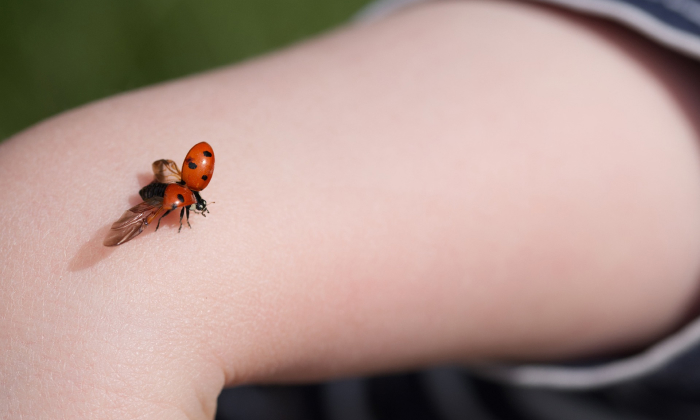

소장 인사말
안녕하십니까.
예천곤충연구소&곤충생태원에 방문하신 것을 환영합니다.
저희 예천곤충연구소&곤충생태원은 환경부 지정 생물다양성 관리기관으로 어디에서도 쉽게 접할 수 없는 다양한 곤충 표본과 살아있는 곤충을 전시하고 있습니다.
사람과 자연환경이 서로 조화되며 공생하는 교육이 이루어지고 곤충과 함께하는 체험학습과 놀이시설이 여러분을 기다리고 있습니다.
-
곤충 생태 체험관
1F 곤충생태체험관 1층에는 3차원 곤충영상물을 볼 수 있는 3D영상관이 있습니다.
2F 2층에는 곤충의 진화와 다양성을 알아볼 수 있는 곤충학습관과 곤충생태관이 있습니다.
3F 3층은 산업의 다양한 분야에서 활용하고 있는 곤충을 배울 수 있는 곤충자원관 및 어린이들의 창의력과 상상력을 키워 줄 체험공간으로 이루어져 있습니다.
-
멀티 체험관
거대한 무당벌레 모양의 멀티체험관은 게임을 통해 어린이들이 곤충에 쉽고 재미있게 접근할 수 있도록 도와주며, 안전하게 뛰어놀 수 있는 공간이 마련되어 있습니다.
-

야외 곤충 생태원
계절에 따라 옷을 갈아입는 야외 곤충생태원에는 나비 터널, 동굴곤충체험관, 곤충테마놀이시설, 전망대 등 다양한 관람 체험 시설이 조성되어 있으며 모노레일을 탑승하면 이 모든 전경을 한눈에 담을 수 있습니다.
다양한 곤충과 청정한 자연이 있는 저희 예천곤충생태원에서 즐거운 추억과 희망을 간직하시길 바랍니다.
감사합니다.
예천군곤충연구소장 이 호 종